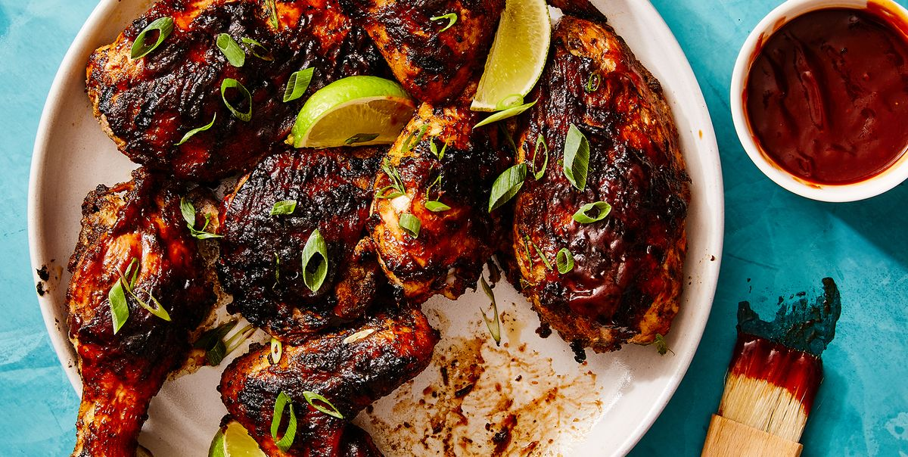

Jerk Chicken

Description
Jamaican Jerk Chicken is well-seasoned grilled chicken with Jamaican jerk marinade that has the perfect balance of heat and sweetness
Ingredients
- Whole Chicken
- Salt and Pepper
- Jerk Seasoning
- Onion Powder
- Garlic Powder
Steps
- Prep the chicken. Trim chicken of excess fat and pat dry with a cloth or paper napkin.
- Season and set aside. Rub with salt and freshly ground pepper, jerk seasoning, garlic powder, and onion powder. Set aside while you make the marinade.
- Pulse until blended. In a food processor or blender, combine the following: thyme, green onions, garlic, ginger, habanero pepper. Pulse for about 30 seconds until blended.
- Soak the chicken. Soak the chicken with a mixture of soy sauce, brown sugar, allspice, cinnamon, nutmeg, chicken bouillon powder, and water or pineapple juice, and then add the blended herbs and seasonings to complete the jerk marinade.
- Prep to refrigerate. Drench the chicken with jerk marinade, place in a zip lock bag and refrigerate for at least 3 hours, preferably overnight. Try not to touch the jerk blend with your hands because it is extremely spicy hot. If possible, use gloves.
- Prep to grill. When ready to grill, remove chicken from the jerk marinade and place on medium to high lightly oiled grill. Reserve the remaining marinade.
- Start grilling. Cook chicken on the prepared grill for 12- 20 minutes, until juices run clear with an internal temperature of 165 degrees F, turning often to optimize cooking and browning. You may also broil or roast the chicken in a hot oven (425 degrees F)
- Simmer and serve. In a small saucepan simmer the remaining marinade and the one from the chicken for about 7 minutes. Serve with the chicken or mix it before serving with the plantains.